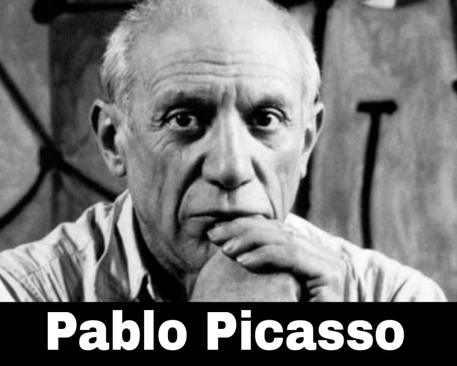

Pablo Picasso
OBRAS

Pablo Ruiz Picasso fue un pintor y escultor español, creador del cubismo. Representaba la rama del arte contemporáneo más física, la necesidad de pintar y de crear de forma material.
- Nacimiento: 25 de octubre de 1881, Málaga, España.
- Fallecimiento: 8 de abril de 1973, Mougins, Francia.
“La Guernica”

“La Mujer que llora”

“Las Señoritas de Avignon”

“El Sueño”